<div ng-controller="AddAPoleController" data-ng-init="init()">
    <ons-page>

        <!-- Top navigation bar -->
        <div class="navigation-bar">
            <div class="navigation-bar__left">
                <span class="toolbar-button--quiet navigation-bar__line-height" ng-click="myNavigator.popPage({animation: 'slide'});">
                    <i class="ion-ios-arrow-left" style="font-size:32px; vertical-align:-6px;"></i>
                </span>
            </div>

            <div class="navigation-bar__center">
                Add a Pole
            </div>

            <div class="navigation-bar__right" onclick="informationModal.show('modal')">
                <span class="toolbar-button--quiet navigation-bar__line-height">
                    <i class="ion-ios-information-outline" style="font-size:32px; vertical-align:-6px;"></i>
                </span>
            </div>
        </div>

        <!-- Scroller -->
        <ons-scroller style="height: 100%; width: 100%">

            <!-- Default Background -->
            <div class="page-header">
                <ons-row class="page-header">
                    <ons-col class="page-header-left" width="30%">
                        
                    </ons-col>

                    <ons-col .page-header-right>
                        <h4 class="page-header-right header">
                            Add a Pole
                        </h4>
                        <p class="page-header-right description">
                            Create a new Pole and assign it to a Frid Sqaure, Transfomer and associated Pole.
                        </p>
                        <p class="page-header-right description">
                            BETA v1.0
                        </p>
                    </ons-col>
                </ons-row>
            </div>

            <!-- Form Start -->
            <form class="login-form" style="text-align: left" name="myForm" novalidate>
                <!-- Grid square -->
                <!-- Dont show the patrol form if no data avalable in localStorage -->
                <div style="text-align: center" ng-if="!showPatrolForm">
                    <h6>
                        ALERT!
                    </h6>
                    <p>
                        There is currently no Patrol data <strong>DOWNLOADED</strong> to this device to display.<br /><br />
                        Please return to the <strong>Main Menu</strong>, make sure you have an active Network connetion and download any assigned patrol data.
                    </p>

                    <br />

                    <!-- Back to Main Menu -->
                    <section style="padding: 0 8px 8px; text-align: center">
                        <br />
                        <ons-button style="text-shadow: none; font-weight:300; padding-left: 40px; padding-right: 40px;" var="saveBtn" modifier="medium" ng-click="myNavigator.pushPage('main-navigation.html', {animation: 'fade'});">Back to Main Menu</ons-button>
                    </section>
                </div>
                
                <!-- Show the patrol form if data avalable in localStorage -->
                <section ng-if="showPatrolForm" class="form-section">
                    <ons-row>
                        <ons-col>
                            <p class="form-header">Grid Square</p>
                        </ons-col>
                    </ons-row>

                    <ons-row>
                        <ons-col>
                            <p class="form-field-text">
                                Select grid square
                            </p>
                            <select ng-model="GridSquareArray.idmap"
                                    data-ng-options="gridSquare.idmap as gridSquare.mapdesc for gridSquare in GridSquareArray"
                                    ng-change="changedValue(GridSquareArray.idmap, 'GridSquare')">
                                <option value="">-- Please Select --</option>
                            </select>
                        </ons-col>
                    </ons-row>
                </section>

                <br />

                <!-- Transformer -->
                <section class="form-section" ng-show="::GridSquareArray.idmap">
                    <ons-row>
                        <ons-col width="95%">
                            <p class="form-header">Transformer</p>
                        </ons-col>
                        <ons-col>
                            
                        </ons-col>
                    </ons-row>

                    <ons-row>
                        <ons-col>
                            <p class="form-field-text">
                                Select transformer
                            </p>
                            <select ng-model="TransformerArray.idtransformer"
                                    ng-options="transformer.idtransformer as transformer.transformerdesc for transformer in TransformerArray | filter:{ mapid : GridSquareArray.idmap }"
                                    ng-change="changedValue(TransformerArray.idtransformer, 'Transformer')">
                                <option value="" label="-- Please Select --"></option>
                            </select>
                        </ons-col>
                    </ons-row>
                </section>

                <br />

                <!-- Pole -->
                <section class="form-section" ng-show="::TransformerArray.idtransformer">
                    <!-- Pole number -->
                    <ons-row>
                        <ons-col>
                            <p class="form-header">Pole</p>
                        </ons-col>
                    </ons-row>

                    <ons-row>
                        <!-- Add pole -->
                        <ons-col>
                            <p class="form-field-text">
                                Add pole
                            </p>
                            <textarea class="textarea"
                                      rows="1"
                                      placeholder=""
                                      ng-model="newPoleNumber"></textarea>
                        </ons-col>
                    </ons-row>

                    
                    <!-- Select associated pole -->
                    <!-- Display both Pole Number and Key-->
                    <!--<ons-row>
                        <ons-col>
                            <p class="form-field-text">
                                Select pole
                            </p>
                            <select ng-model="PoleArray.polekey"
                                    ng-options="poleArray.polekey as poleArray.polekey + ' (' + poleArray.polenum + ')'  for poleArray in PoleArray | filter:{ idtransformer : TransformerArray.idtransformer }"
                                    ng-change="changedValue(PoleArray.polekey, 'Pole')">
                                <option value="" label="-- Please Select --"></option>
                            </select>
                        </ons-col>
                    </ons-row>-->
                </section>

                <br /><br />

                
                <!-- Save button -->
                <section style="padding: 0 8px 8px" ng-show="::TransformerArray.idtransformer">
                    <ons-button style="text-shadow: none; font-weight:300" var="saveBtn" modifier="large" ng-click="saveAddedPoleDetails()">Save</ons-button>
                </section>


                <!-- Save button -->
                <!--<section style="padding: 0 8px 8px" ng-show="::PoleArray.polekey">
                    <ons-button style="text-shadow: none; font-weight:300s" var="saveBtn" modifier="large" ng-click="saveAddedPoleDetails()">Save</ons-button>
                </section>-->

                <br /><br /><br /><br />

            </form>
        </ons-scroller>


        <!-- Displays Modal Information Screen -->
        <ons-modal var="informationModal">
            <div class="alert-dialog-mask"></div>

            <div class="alert-dialog alert-dialog--android">
                <div class="alert-dialog-title alert-dialog-title--android">
                    <div style="text-align: center">Information</div>
                </div>

                <div class="alert-dialog-content alert-dialog-content--android">
                    <div style="text-align: center; padding-top: 10px; padding-bottom: 15px; padding-left: 10px; padding-right: 10px;">
                        <p>
                            <small>
                                Create a new Pole and assign it to a Grid Sqaure, Transfomer and associated Pole.
                            </small>
                        </p>
                    </div>
                </div>

                <div class="alert-dialog-footer alert-dialog-footer--one">
                    <button class="alert-dialog-button alert-dialog-button--primal alert-dialog-button--one" ng-click="informationModal.hide()" )>Ok</button>
                </div>
            </div>
        </ons-modal>

    </ons-page>
</div>


